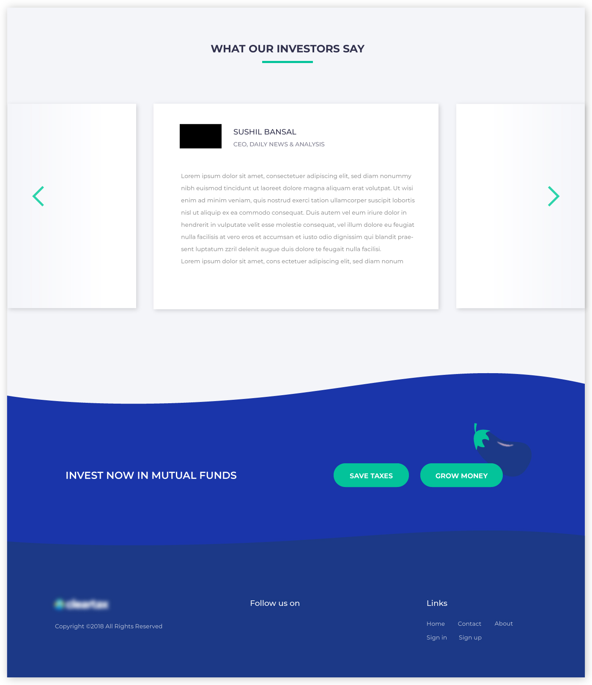

This article describes the landing page design process I followed for an internship assignment and how I used Illustrative Storytelling to increase the user engagement.
This article describes the landing page design process I followed for an internship assignment and how I used Illustrative Storytelling to increase the user engagement.
Before starting the project, I did some online research about landing pages in general, their purpose, how they differ from home pages, etc. This section gives a brief of what I learned.
A landing page is directly connected to the marketing campaign. It should convey the same message and should give the same feel as the social media or PR campaign. In doing so, users feel comfortable that they’ve reached the right place.
Unlike the homepage which allows the user to do a bunch of things, a landing page is highly focused on conversion.
The attention ratio, which is the ratio of things the user can do to the number of things the user should do, is usually one on a landing page and greater than one on a homepage.
Thus, on a landing page, we should minimize the links which aren’t leading the user to accomplish the goal.
Understanding the user behavior is necessary to design a successful landing page. It is important to know from where the users are being directed to the page, what are they looking for, how much they understand the product, are they completely new to the product or have used a similar product or service before.
Based on the user needs, the content of the page is decided. Each landing page has a hero section which conveys the goal of the page in the first look. It contains the headline, call to action and primary illustration of the page. Showing social acceptance or proof can be helpful as people turn to peers or a trusted authority when in doubt. If the page is long, the call to action needs to be placed at regular intervals.
The company’s website also serves as an online portal for investments. So, the user flow would be:
• Users are directed to the landing page through a social media or PR campaign, online ad, etc.
• On the landing page if they are converted, which was the main goal that I had to ensure, they are directed to the specific tax saving or money growing funds page.
• They choose an appropriate offer and fill a form to start their investment.
My target users were investors. I divided them into three groups according to their needs and experience.
These people have a very little experience in mutual fund investment but want to grow their money. The main focus to convert these people is to generate awareness of the process and schemes of investments.
These people have invested in mutual funds for a while and are aware of how things work. The main focus to convert them is to show how we are a better option than others in providing them good returns.
They are large organizations (such as banks, finance companies, insurance companies, labor union funds, mutual funds or unit trusts, pension funds) which have considerable cash reserves that need to be invested.
Their representatives personally meet with company executives, study entire industries and evaluate companies in depth. They are very less likely to go through a landing page process for the online investment.
Telling your story with the help of Illustrations can increase user engagement and create a personalized feeling. Storytelling is a powerful technique to immerse the audience in the content, which would otherwise be just a bunch of information.
I decided to use this technique in the landing page design, by threading the illustrations around a story.
Planting a tree is analogous to starting an investment. It pictures future expectations which could be met by Mutual Funds.
Rainfall saves the water which needs to be given to the tree. This water saving is analogous to saving of taxes.
In Mutual Funds, people pool money to be invested so that each one’s wealth is grown. Similarly, in a plantation all trees share resources and each of them grows.
In the footer section, where there is a last call to the user to click the CTA, I’ve used the illustration of the sweet fruit or the returns that the investor would get in the future.
I tried to design it in a way so that it displays the goal of the page at a glance. A clear headline, further explanation by sub-headers and prominent CTA buttons did the job nicely.
Keeping in mind the beginner investors, this section clearly explains everything that one needs to know about tax saving. For the experienced investors who already know how tax saving works and are interested in how much they can save, there is a returns calculator which also compares the tax saving funds with other funds.
This section appeals the user to invest in mutual funds to grow their money. Again, for the beginner investors, it explains the benefits of mutual funds clearly.
This section explains the various options or routes available to invest in mutual funds — Direct Purchase, Agents or Online(which is provided by the company website as well).
Social consent can be very persuasive in the situation of doubt. People like to hear reviews from others before using any product. This section appeals to both kind of investors — Beginner and Experienced. The footer gives one last call to the viewer to click the CTA.
This 3-day design sprint assignment was a great learning opportunity for me in how to quickly understand the problem, do user research, come up with solutions, make illustrations, prototype, and iterate.